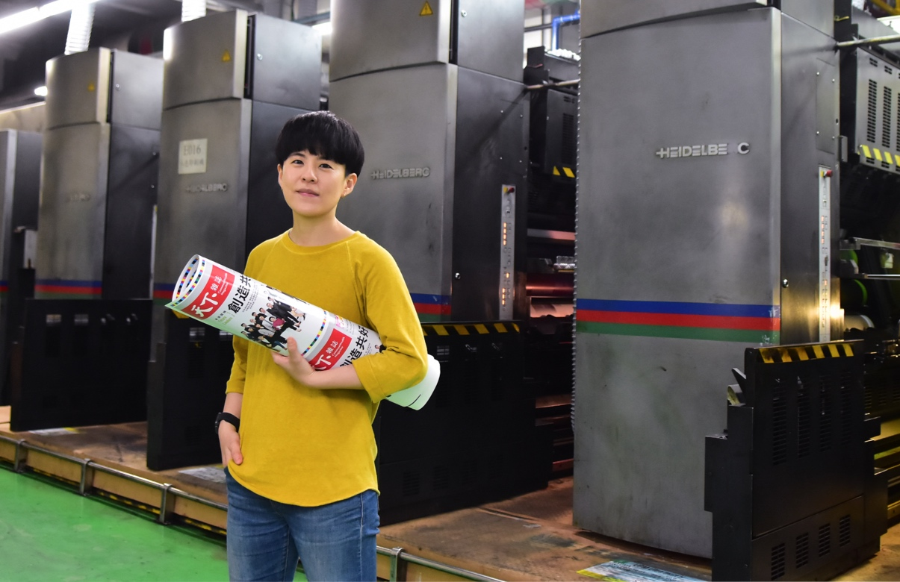

共同支援部門是整個集團日常營運的後盾，包括了財務、MIS、人資、客服、倉儲發行，還有出版業特有的印務...等部門。他們用客戶導向的服務提供堅實支援，更以專業顧問的角色，協助前線部門製作高品質的產品、獲得市場的成功。

李羿潔・天下雜誌群 印務副理
我不喜歡人家問我的事，我回答「不知道」
別人視為沒落的印刷，她玩出多樣化的創新。一般人覺得溝通很費事耗力，她認為這樣才不無聊。30出頭的羿潔，如何發揮印務工作的可能性？
我學的是圖文傳播和數位出版，當時最不喜歡的就是印刷，我沒有想到最後會進入當時還以印刷為主的出版業。但是8年來，我覺得能學的東西真的很多；集團的產品種類和營業範圍很廣，我不僅負責傳統雜誌、書籍的印務工作，還有企業或政府的代編書，行銷活動手冊、邀請卡票券，甚至信封、手提袋等包材。
每次遇到不會的或是新的挑戰，我就自己找資源去學習。我經常去書店、在外面逛，看看別人都用些什麼材質、怎麼呈現？有好的想法就帶回來跟同事討論。我很不喜歡人家問我專業的事，而我說我不知道。以前的設計真的比較無聊，現在因為要求少量多樣，嘗試的可能性變多了，反而有機會玩很多創新。
同理，在別人還沒提出需求時就告訴他作法
這份工作讓我學到最多的是「同理」，去理解對方為什麼有這種需求、講這種話？我們的客戶有內部同仁、也有協力廠商，每天都會遇到不同的窗口。我經常暗地觀察，去關心他們、盡力了解每個部門的想法和難處，用情緒做事一定不會有好結果。
對方有需求來找我們，就是想要獲得有用的答案。如果可以在他提出需求之前就給出解方，或是建議被採納，就表示我們用專業贏得了信任，這就是我們共同平台部門的價值。
工作現場直擊
加入維運管理團隊
如果你對這份工作有興趣，你得：
- 不要怕犯錯，這裏有高度包容力，要為自己負責、從中學習。
- 要能獨立作業、主動積極，幫客戶提早發現問題、降低風險。
- 要願意、且會溝通協調。
- 要耐得住麻煩、瑣碎、細節。